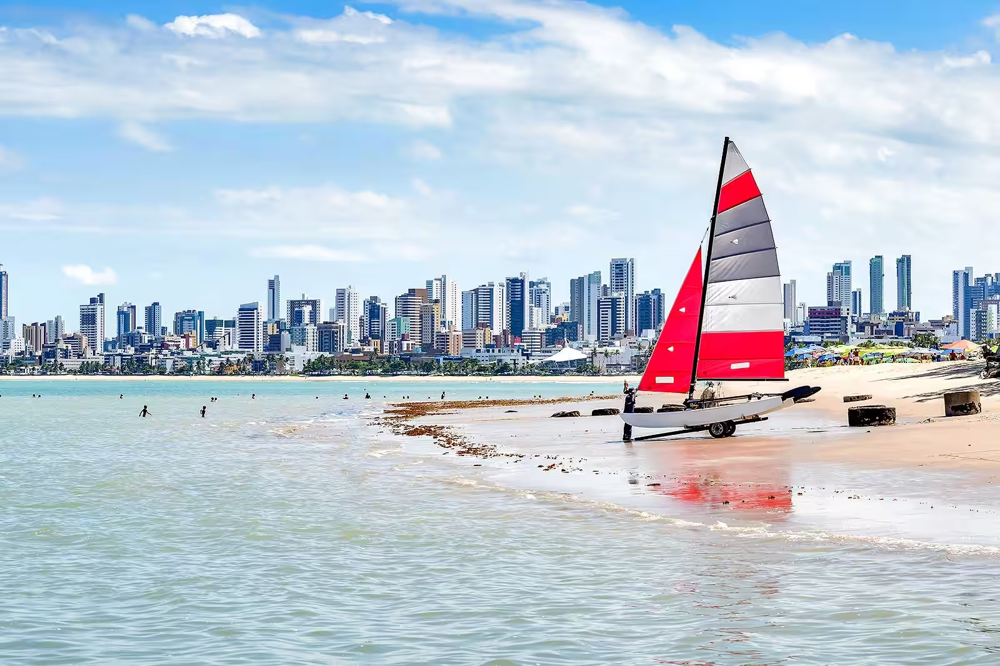
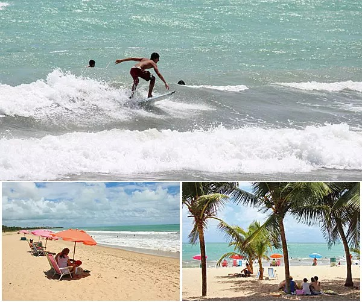
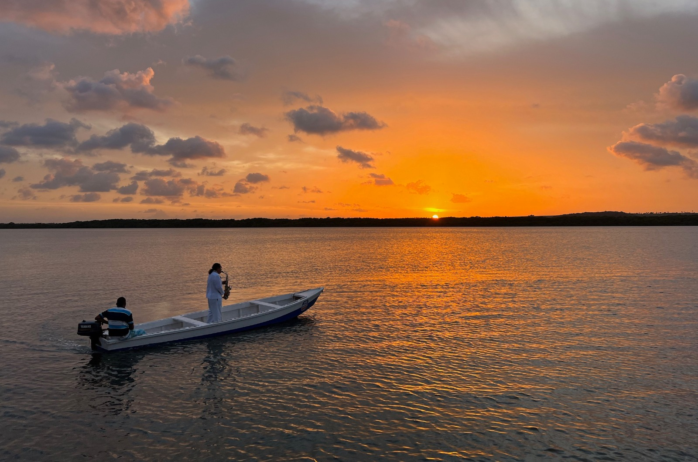
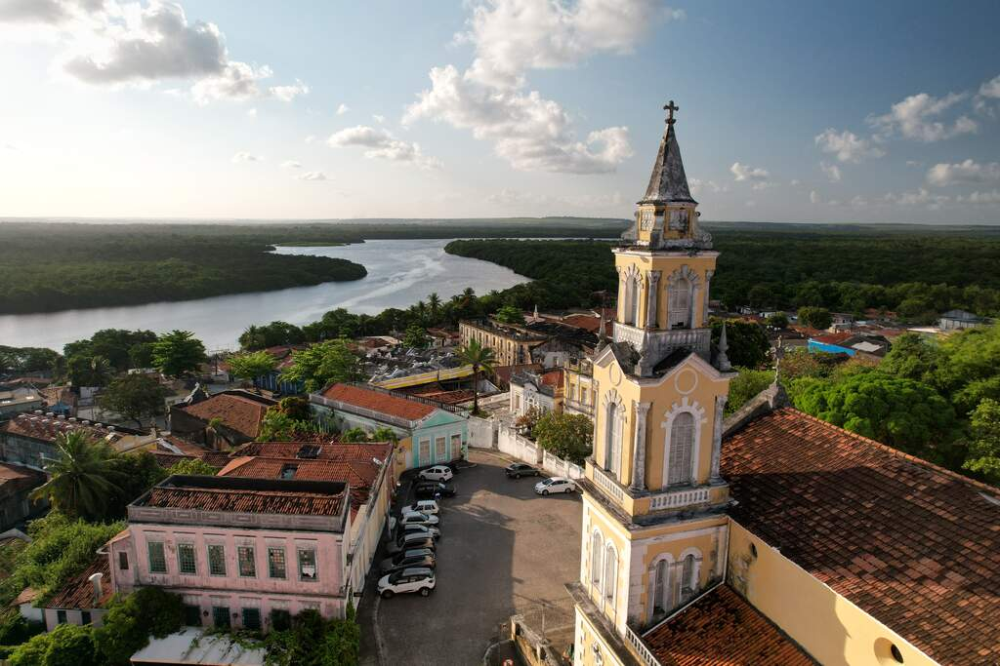
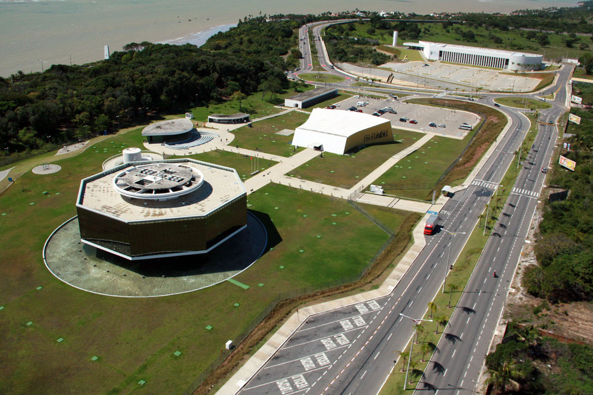

COMO CHEGAR EM JOÃO PESSOA E CIRCULAR PELA CIDADE
As companhias aéreas brasileiras operam voos diretos para João Pessoa saindo de Goiânia, Brasília, Uberlândia, São Paulo (todos aeroportos),
Rio de Janeiro, Salvador, Recife e Natal.
Se a ideia for fazer uma viagem de carro até João Pessoa, o acesso será feito pela BR-101, totalmente duplicada na
região
E através das rodoviárias, que disponibilizam viagens até João Pessoa, você consegue chegar ate João Pessoa, para isso
é necessário
ver quais as empresas fazem as viagens.
SOBRE JOÃO PESSOA
-
Localização: João Pessoa, capital da Paraíba, no extremo oriental das Américas.
Belezas Naturais: Praias como Tambaba, Coqueirinho e Manaíra, com águas cristalinas e areias douradas.
Centro Histórico: Preserva arquitetura colonial, igrejas centenárias e praças pitorescas.
Gastronomia: Destaque para pratos típicos como carne de sol, tapioca e frutos do mar frescos.
Atrações Culturais: Centro Cultural São Francisco, Museu Histórico de João Pessoa.
Hospitalidade: Conhecida pela calorosa recepção dos habitantes locais.
Clima Tropical: Ideal para desfrutar do sol e do mar durante todo o ano.
JOÃO PESSOA: PRAIAS
As praias de João Pessoa são diversas e encantadoras, com opções para todos os gostos.
Destinos como Tambaú, Cabo Branco, Tambaba e Coqueirinho oferecem paisagens únicas
e atividades aquáticas, além de preocupação com a preservação ambiental.
TAMBAÚ E CABO BRANCO

Cabo Branco e Tambaú são duas das praias mais emblemáticas de João Pessoa, Paraíba.
Cabo Branco é conhecida por sua ampla faixa de areia e clima tranquilo, perfeita para caminhadas
relaxantese para visitar o Farol do Cabo Branco, o ponto mais oriental das Américas.
Já Tambaú é uma praia movimentada e animada, com águas calmas ideais para banho e prática de esportes aquáticos.
Ambas oferecem uma variedade de opções de entretenimento e gastronomia ao longo de sua orla.
BESSA
A Praia do Bessa tem uma área conhecida como “Caribessa”.
Devido suas águas transparentes e calmas, a região lembra o “Caribe” e torna o local único.
Essas características são mais comum no meses de outubro à março, onde o clima é mais quente e ensolarado.
INTERMARES
A Praia de Intermares, localizada em Cabedelo, próxima a João Pessoa, Paraíba,é conhecida
por sua beleza natural e tranquilidade. Se você é amante do surfe, eis a sua praia favorita de João Pessoa.
A praia Intermares possui as águas mais agitadas, proporcionando aos visitantes a prática de diversos esportes
surfe e kitesurfe fazem sucesso por aqui.
PÔR DO SOL NA PRAIA DO JACARÉ
A Praia do Jacaré é um dos melhores destinos para quem quer aproveitar o máximo
de contato com a natureza, principalmente quando falamos do pôr do sol e paisagens de tirar o fôlego.
Inclusive, a Praia do Jacaré é uma das mais procuradas na região de João Pessoa, oferecendo muitas opções
de lazer, passeios e experiências incríveis no Rio Paraíba.
PASSEIOS CULTURAIS
CENTRO HISTÓRICO
O Centro Histórico de João Pessoa deu início a fundação da cidade, com arquitetura colonial, igrejas antigas e praças encantadoras.
Dos pontos históticos, destacam-se a Igreja de São Francisco e o Centro Cultural São Francisco, que oferecem uma visão
da rica história local.
O Mercado de Artesanato Paraibano é uma parada imperdível para encontrar produtos artesanais locais.
É um destino culturalmente rico e encantador para explorar em João Pessoa.
ESTAÇÃO CABO BRANCO
A Estação Cabo Branco foi inaugurada em 2008.
São cinco edifícios, totalizando 8.571 m² de área construída, pelos quais se espalham salas de exposição permeadas pela luz natural,
anfiteatro para shows ao ar livre, loja de souvenir, restaurante e café.
Há ainda um anfiteatro a construção de maior destaque depois da torre, onde um painel do artista plástico Flávio Tavares extrai o fantástico do cotidiano da cidade.
Apesar das linhas arrojadas, a maior atração da estação está, talvez, do seu lado de fora.
Ao subir na torre-mirante, o visitante se depara com um terraço panorâmico que oferece 360° de vista para a natureza do parque do Cabo Branco,
os barcos no mar e os prédios que preenchem, no horizonte, a orla de João Pessoa.
O parque paraibano onde foi construída a estação é uma criação recente.
Sua delimitação pela prefeitura teve como objetivo preservar falésias, Mata Atlântica, cursos d’água e pequenas dunas que existem no altiplano de Cabo Branco.
Assim, a cidade reconheceu que foi brindada pela natureza e, inaugurando a estação, retribui-lhe com o que há de mais bonito na arquitetura.
FAROL CABO BRANCO

O Farol de Cabo Branco simboliza o Extremo Oriental das Américas — o lugar onde o sol nasce primeiro em nosso continente.
É um farol de formato triangular, utilizado apenas como marco e não para fins náuticos.
O Farol é considerado ponto turístico de João Pessoa e fica em uma das extremidades do bairro de Cabo Branco, em cima de uma falésia.
O mirante, que antigamente permitia uma bela vista para a Praia do Seixas, hoje conta com uma grade e está praticamente abandonado, carecendo de atenção por parte da administração pública.
Próximo ao Farol de Cabo Branco está o Parque Ecológico Bosque dos Sonhos, um espaço com algumas lojinhas, restaurantes, trilhas para caminhada e mirantes com vista para o mar.
CASA DA POLVORA

Construída em 1710, foi a terceira casa de pólvora construída na cidade.
Foi estrategicamente situada num ponto médio da colina onde a cidade foi inicialmente estabelecida, com a função de defender a cidade.
De estrutura simples, testemunhou os tempos de lutas e invasões.
Além de ser local de armazenagem de armas e munições, servia também de ponto de observação para o Porto do Capim.
Ultimamente não desenvolve mais as antigas funções.
Até bem pouco tempo constituía-se num local de divulgação cultural, abrigando um Museu Fotográfico; atualmente encontra-se fechada.
Localiza-se na ladeira de São Francisco e é tombada pelo Patrimônio Histórico.